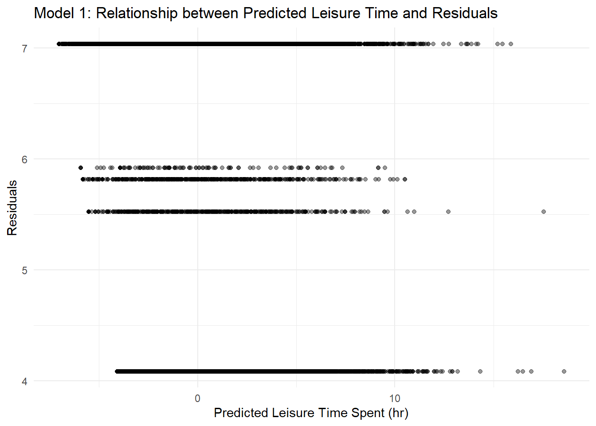
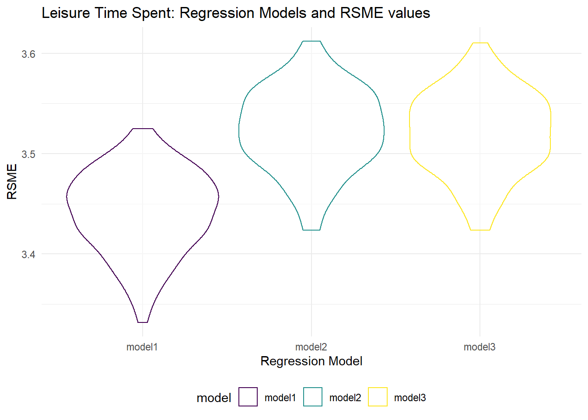

Statistical Analyses
library(tidyverse)
library(dplyr)
library(modelr)
library(mgcv)
options(scipen = 50)
knitr::opts_chunk$set(echo = TRUE)Regression
Next we will conduct some linear regression analyses to understand what factors predict time spent on leisure activities, using the statistically weighted data that compensates for aspects of the sampling and data collection process such as differences in response rates across demographics. There we cannot interpret the associations assuming hours spent is the outcome, and we will instead focus on the direction of the association.
Models
First, we wanted to explore whether there are differences in time spent on leisure activities in 2019 vs. 2020, as we have hypothesized that in 2020, after the pandemic hit and the US went into lockdown, people spent more at home doing fun activities and picking up new hobbies.
cps_summary_leisure =
read_csv("./data/summary_household_category.csv") %>%
filter(category == "leisure")
cps_summary_leisure$year =
as_factor(case_when(
cps_summary_leisure$year == 2019 ~ "Pre-Pandemic 2019",
cps_summary_leisure$year == 2020 ~ "Post-Pandemic 2020",
TRUE ~ "unknown"
))
model_year = lm(category_sum_hour ~ year, data = cps_summary_leisure)
model_year %>%
broom::tidy() %>%
select(term, estimate, p.value) %>%
mutate(term = str_replace(term, "^year", "Year: ")) %>%
knitr::kable(digits = 3)| term | estimate | p.value |
|---|---|---|
| (Intercept) | 5.180 | 0 |
| Year: Post-Pandemic 2020 | 0.237 | 0 |
There is a significant difference between 2019 and 2020 in terms of leisure time spent (p-value <0.05). We expect that leisure time spent in 2020 (post-pandemic) is 0.237 hours longer per day than leisure time spent in 2019, on average. This aligns with our hypothesis that after the pandemic, people started spending additional time on leisure activities.
Next, we want to fit a few models that we hypothesize may predict time spent on leisure activities based on literature and own experiences.
(Model 1): Labor force status. We believe that one of the strongest predictors of time spent on leisure activities is whether someone is currently employed or not. The categories of labor force status are employed but absent from work (reference group), retired, employed at work, unemployed and looking, and unemployed on layoff.
(Model 2): Demographic characteristics: race, age, and sex. Race, age, and sex, are three common demographic variables that we would expend to see trends with for time spent on leisure activity.
(Model 3): Demographic characteristics: race, age, and sex, and their interactions. This model builds on model 2 by exploring whether there are any additive or multiplicative interactions present between the 3 demographic variables.
model1 =
lm(category_sum_hour ~ labor_force_status, data = cps_summary_leisure)
model1 %>%
broom::tidy() %>%
select(term, estimate, p.value) %>%
mutate(term = str_replace(term, "^labor_force_status", "Employment Status: ")) %>%
knitr::kable(digits = 3)| term | estimate | p.value |
|---|---|---|
| (Intercept) | 5.525 | 0.000 |
| Employment Status: Employed-At work | -1.441 | 0.000 |
| Employment Status: Retired | 1.513 | 0.000 |
| Employment Status: Unemployed-Looking | 0.289 | 0.169 |
| Employment Status: Unemployed-On layoff | 0.395 | 0.286 |
From the table above, we can see that in Model 1, employment status is a very strong predictor of time spent on leisure activities. Those who are employed and at work are expected to spend 1.4 fewer hours per day on leisure activities per day in comparison to those who are employed but absent from work, on average. Additionally, those who are retired are expected to spend 1.5 more hours per day on leisure activities per day in comparison to those who are employed but absent from work.
model2 =
lm(category_sum_hour ~ age + race + sex, data = cps_summary_leisure)
model2 %>%
broom::tidy() %>%
select(term, estimate, p.value) %>%
mutate(
term = str_replace(term, "^race", "Race: "),
term = str_replace(term, "sexMale", "Sex: Male"),
term = str_replace(term, "age", "Age")
) %>%
knitr::kable(digits = 3)| term | estimate | p.value |
|---|---|---|
| (Intercept) | 2.278 | 0.000 |
| Age | 0.059 | 0.000 |
| Race: American Indian | -0.382 | 0.299 |
| Race: Asian | -1.322 | 0.000 |
| Race: Black | 0.335 | 0.154 |
| Race: Hawaiian/Pacific Islander | 1.017 | 0.114 |
| Race: White | -0.410 | 0.069 |
| Sex: Male | 0.785 | 0.000 |
model3 =
lm(
category_sum_hour ~ age + race + sex + age*race + age*sex + race*sex + age*race*sex,
data = cps_summary_leisure)
model3 %>%
broom::tidy() %>%
select(term, estimate, p.value) %>%
mutate(
term = str_replace(term, "^race", "Race: "),
term = str_replace(term, "sexMale", "Sex: Male"),
term = str_replace(term, "age", "Age"),
term = str_replace(term, "Age:race", "Age * Race:"),
term = str_replace(term, "Age:Sex", "Age * Sex"),
term = str_replace(term, "Race: American Indian:Sex: Male", "Race:American-Indian * Sex:Male"),
term = str_replace(term, "Race: Asian:Sex: Male", "Race:Asian * Sex:Male"),
term = str_replace(term, "Race: White:Sex: Male", "Race:White * Sex:Male"),
term = str_replace(term, "Race: Black:Sex: Male", "Race:Black * Sex:Male"),
term = str_replace(term, "Race: Hawaiian/Pacific Islander:Sex: Male", "Race:Hawaiian/Pacific Islander * Sex:Male"),
term = str_replace(term, "Age * Race:American Indian:Sex: Male", "Age * Race:American Indian * Sex:Male"),
term = str_replace(term, "Age * Race:Asian:Sex: Male", "Age * Race:Asian * Sex:Male"),
term = str_replace(term, "Age * Race:Black:Sex: Male", "Age * Race:Black * Sex:Male"),
term = str_replace(term, "Age * Race:White:Sex: Male", "Age * Race:White * Sex:Male"),
term = str_replace(term, "Age * Race:Hawaiian/Pacific Islander:Sex: Male", "Age * Race:Hawaiian/Pacific Islander * Sex:Male"),
) %>%
knitr::kable(digits = 3)| term | estimate | p.value |
|---|---|---|
| (Intercept) | 2.168 | 0.008 |
| Age | 0.059 | 0.000 |
| Race: American Indian | -1.665 | 0.248 |
| Race: Asian | 0.015 | 0.987 |
| Race: Black | -0.857 | 0.324 |
| Race: Hawaiian/Pacific Islander | 3.108 | 0.253 |
| Race: White | -0.386 | 0.639 |
| Sex: Male | 2.937 | 0.013 |
| Age * Race:American Indian | 0.019 | 0.498 |
| Age * Race:Asian | -0.029 | 0.138 |
| Age * Race:Black | 0.021 | 0.233 |
| Age * Race:Hawaiian/Pacific Islander | -0.063 | 0.359 |
| Age * Race:White | 0.002 | 0.904 |
| Age * Sex: Male | -0.044 | 0.070 |
| Race:American-Indian * Sex:Male | -1.554 | 0.464 |
| Race:Asian * Sex:Male | -1.359 | 0.324 |
| Race:Black * Sex:Male | -1.616 | 0.204 |
| Race:Hawaiian/Pacific Islander * Sex:Male | -2.826 | 0.475 |
| Race:White * Sex:Male | -1.829 | 0.126 |
| Age * Race:American Indian:Sex: Male | 0.051 | 0.222 |
| Age * Race:Asian:Sex: Male | 0.025 | 0.395 |
| Age * Race:Black:Sex: Male | 0.043 | 0.099 |
| Age * Race:Hawaiian/Pacific Islander:Sex: Male | 0.085 | 0.371 |
| Age * Race:White:Sex: Male | 0.037 | 0.140 |
The 3 main effect predictors in Model 2 are all significant (p-value < 0.05). Specifically, for every 1 year increase in age, we expect people to spend 0.059 hours more on leisure activities per day on average, adjusting for race and sex. We expect males to spend 0.785 hours more on leisure activites per day on average, adjusting for race and age. Finally, those of Hawaiian/Pacific Islanders descent are expected to spend 1.02 hours more per day on leisure activities when compared to people of mixed race, while those who are Asian spend the least time on leisure activities on average, adjusting for sex and age.
However in the model with the interaction terms (Model 3), race is no longer significant, and none of the interaction terms are significant (p-value > 0.05).
Diagnostics
Before we proceed, it is also important to look at residuals and fitted values in our models
cps_summary_leisure %>%
modelr::add_residuals(model1) %>% modelr::add_predictions(model1) %>%
ggplot(aes(x = resid, y = pred)) + geom_point(alpha = 0.4) +
labs(x = "Predicted Leisure Time Spent (hr)",
y = "Residuals",
title = "Model 1: Relationship between Predicted Leisure Time and Residuals")
cps_summary_leisure %>%
modelr::add_residuals(model2) %>% modelr::add_predictions(model2) %>%
ggplot(aes(x = resid, y = pred)) + geom_point(alpha = 0.4) +
labs(x = "Predicted Leisure Time Spent (hr)",
y = "Residuals",
title = "Model 2: Relationship between Predicted Leisure Time and Residuals")
cps_summary_leisure %>%
modelr::add_residuals(model3) %>% modelr::add_predictions(model3) %>%
ggplot(aes(x = resid, y = pred)) + geom_point(alpha = 0.4) +
labs(x = "Predicted Leisure Time Spent (hr)",
y = "Residuals",
title = "Model 3: Relationship between Predicted Leisure Time and Residuals")
There are some outliers that will be noted and can be addressed in future analyses. Additionally, we would hope to see a random distribution of residuals across the predicted leisure time values, however there appears to be clear patterns and we can see skewness in the 3 model. This indicates that our models can be improved, but for the purposes of this project, we will continue with our existing model comparisons.
Cross Validation
In order to do the cross validation, we will first create the crossv_mc tibble with the train and test data
cv_df = crossv_mc(cps_summary_leisure, 100) %>%
mutate(
train = map(train, as_tibble),
test = map(test, as_tibble)
)Next, we will fit the models and get the root mean squared errors
fitted_df = cv_df %>%
mutate(
model1 = map(train,
~lm(category_sum_hour ~ labor_force_status,
data =.x)),
model2 = map(train,
~lm(category_sum_hour ~ age + race + sex,
data = .x)),
model3 = map(train,
~lm(category_sum_hour ~
age + race + sex + age*race + age*sex + race*sex + age*race*sex,
data = .x))) %>%
mutate(
rmse_model1 = map2_dbl(model1, test, ~rmse(model = .x, data = .y)),
rmse_model2 = map2_dbl(model2, test, ~rmse(model = .x, data = .y)),
rmse_model3 = map2_dbl(model3, test, ~rmse(model = .x, data = .y))
)Finally, we will plot the distribution of RMSE values to compare each candidate model
fitted_df %>%
select(starts_with("rmse")) %>%
pivot_longer(
everything(),
names_to = "model",
values_to = "rmse",
names_prefix = "rmse_") %>%
mutate(model = fct_inorder(model)) %>%
ggplot(aes(x = model, y = rmse, color = model)) + geom_violin(alpha = 0.5) +
labs(
x = "Regression Model",
y = "RSME",
title = "Leisure Time Spent: Regression Models and RSME values"
)
From the violin plot, we can see that model 1, the model with Employment Status as the predictor, has the lowest RMSE average, which means it is the best model of the 3 that we tested. The interaction terms did not seem to make much of a difference in terms of RSME, as indicated by similar model 2 and model 3 plots.